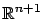
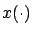

Let us finally go back to our fixed-time optimal control problem from Section 5.1.2 and its HJB equation (5.10) with the boundary condition (5.3), with the goal of resolving the difficulty identified at the end of Section 5.2.1. Specifically, our hope is that the value function (5.2) is a solution of the HJB equation in the viscosity sense. In order to more closely match the PDE (5.34), we first rewrite the HJB equation as

. The control
Now the theory of viscosity solutions can be applied to the HJB equation. Under suitable technical assumptions on the functions  ,
,  , and
, and  , we have the following main result: The value function
, we have the following main result: The value function  is a unique
viscosity solution of the HJB equation (5.38) with the boundary
condition (5.3). It is also locally
Lipschitz (but, as we know from Section 5.2.1, not necessarily
is a unique
viscosity solution of the HJB equation (5.38) with the boundary
condition (5.3). It is also locally
Lipschitz (but, as we know from Section 5.2.1, not necessarily
 ). Regarding the technical assumptions, we will not list them here (see the references in Section 5.4) but we mention that they are satisfied if, for example,
). Regarding the technical assumptions, we will not list them here (see the references in Section 5.4) but we mention that they are satisfied if, for example,  ,
,  , and
, and  are uniformly continuous,
are uniformly continuous,  ,
,  , and
, and  are bounded, and
are bounded, and  is a compact set.
is a compact set.
We will not attempt to establish the uniqueness and the Lipschitz property, but we do want to understand why  is a viscosity solution of (5.38). To this end, let us prove that
is a viscosity solution of (5.38). To this end, let us prove that  is a viscosity subsolution. The additional technical assumptions cited above are actually not needed for this claim. Fix an arbitrary pair
is a viscosity subsolution. The additional technical assumptions cited above are actually not needed for this claim. Fix an arbitrary pair  .
We need to show that for every
.
We need to show that for every
 test function
test function
 such that
such that  attains a local minimum
at
attains a local minimum
at  , the inequality
, the inequality
must be satisfied. Suppose that, on the contrary, there exist a

that results from applying the control |
||
 |
 |

We now have at our disposal a more rigorous formulation of the necessary conditions for optimality from Section 5.1.3. The above reasoning is of course quite different from our original derivation of the HJB equation, but we see that the principle of optimality still plays a central role. The sufficient condition for optimality from Section 5.1.4 can also be generalized, a task that we leave as an exercise.